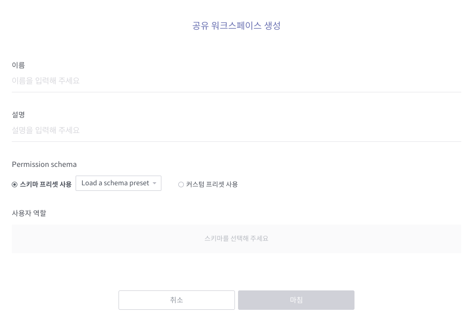

공유 워크스페이스¶
공유 워크스페이스는 여러 사용자가 함께 열람하고 사용하는 워크스페이스입니다. 아래 각 절에서는 공유 워크스페이스를 조회하고 생성하는 법을 설명하고, 공유 워크스페이스에 접근 가능한 사용자나 그룹을 설정할 수 있는 권한 스키마에 대해서 살펴봅니다.
공유 워크스페이스 생성¶
다음의 순서로 새 공유 워크스페이스를 생성할 수 있습니다.
공유 워크스페이스 목록에서
버튼을 클릭하면 새 공유 워크스페이스를 생성하는 화면이 나타납니다.
이름과 설명을 입력한 후, 아래 설명을 참조하여 Permission schema를 설정합니다.

스키마 프리셋 사용: 관리자가 기존에 정의해놓은 권한 스키마를 불러옵니다.
커스텀 프리셋 사용: 새 권한 스키마를 정의합니다. (새 권한 스키마를 정의하는 방식은 공유 워크스페이스 접근 권한 설정 참조)
마침 버튼을 눌러 워크스페이스 생성을 완료합니다.
공유 워크스페이스 접근 권한 설정¶
공유 워크스페이스 접근 권한 설정은 기본적으로 다음과 같은 두 단계로 이루어집니다.
사용자 역할별 접근 권한 정의 (권한 스키마 설정 참조)
개별 사용자 또는 사용자 그룹 각각에게 적합한 사용자 역할 부여 (공유 멤버 및 그룹 설정 참조)
권한 스키마 설정¶
권한 스키마 조회하기¶
공유 워크스페이스 홈 화면 우측 상단에 있는 더 보기 버튼을 클릭한 후, 권한 스키마 설정을 누르면 아래와 같이 현재 정의된 권한 스키마를 보여줍니다.

위 예시 그림에서는 사용자 역할(User role)로서 Manager, Editor, Watcher, Guest가 정의되어 있습니다. '권한 스키마'란, 이와 같이 각각 고유한 접근 권한이 정의된 사용자 역할들의 집합을 일컫는 말입니다.
각 사용자 역할에 대한 컬럼별 속성은 다음과 같습니다.
Default role
새롭게 추가되는 개별 사용자나 사용자 그룹에게는 Default role로 지정된 사용자 역할이 기본적으로 부여됨
워크북/노트북/워크벤치 개체 타입별 권한
View: 해당 타입의 개체에 접근하여 데이터를 열람할 수 있음
Create: 해당 타입의 개체를 생성, 수정, 삭제할 수 있음
Edit any: 다른 사용자가 생성한 해당 타입의 개체를 수정, 삭제할 수 있음
워크스페이스 권한
Create folders: 워크스페이스 내 폴더를 생성, 수정, 삭제할 수 있음
Set config.: 워크스페이스의 이름과 설명을 수정하고 워크스페이스 권한 스키마를 바꿀 수 있음
권한 스키마 설정 바꾸기¶
권한 스키마 조회 화면에서 스키마 변경 버튼을 클릭하면 아래와 같이 기존에 정의된 권한 스키마를 변경할 수 있는 화면이 나타납니다.

화면 우측에 있는 Select Role Set 콤보박스를 클릭하면 관리자가 정의해놓은 스키마들이 제시되고, 목록 맨 아래에는 새로운 사용자 역할을 정의할 수 있는 커스텀 스키마 항목이 있습니다. 이중 하나를 선택하면 아래와 같은 화면이 나타납니다. (커스텀 스키마 항목을 선택했을 경우 사용자 역할별 권한부터 정의해야 합니다. New schema 우측의 수정 버튼을 눌러 권한 설정 화면으로 이동한 후 권한 스키마 조회하기 항목의 설명을 참조하여 사용자 역할별로 권한을 설정하십시오.)

여기서는 현 권한 스키마의 각 사용자 역할을 새로운 권한 스키마에 정의된 사용자 역할로 치환하는 작업을 합니다. 각 사용자 역할 이름 옆에 있는 아이콘에 마우스를 오버하면 해당 사용자 역할에 할당된 권한이 나타납니다. 마침 버튼을 누르면 권한 스키마 설정이 완료됩니다.
공유 멤버 및 그룹 설정¶
공유 워크스페이스 홈 화면 우측 상단에 있는 더보기 아이콘을 클릭한 후 공유 멤버 및 그룹 설정을 누르면 아래와 같이 공유 멤버 및 그룹 설정 화면이 나타납니다. 여기서는 권한 스키마에서 정의된 각 사용자 역할을 개별 사용자 또는 사용자 그룹에 할당하는 작업을 합니다. 아래 설명을 참조하여 사용자 역할을 할당한 후 마침 버튼을 누르면 워크스페이스 접근 권한 설정이 완료됩니다.

사용자 역할 할당 단위 선택
멤버 탭: 사용자 역할을 개별 사용자 단위로 할당합니다.
그룹 탭: 사용자 역할을 사용자 그룹 단위로 할당합니다. (사용자 그룹은 관리자 권한으로 지정할 수 있습니다.)
사용자 역할: 클릭하면 권한 스키마(사용자 역할별 권한 정의) 정보가 팝업 창으로 나타납니다.
멤버/그룹 목록: Discovery에 등록된 사용자들(그룹 탭에서는 그룹들)이 나열됩니다. 목록에 있는 사용자(그룹) 중 하나를 클릭하면 우측 역할 부여 영역에 추가됩니다. 이미 추가된 사용자(그룹)을 클릭하면 해당 사용자(그룹)가 우측 영역에서 제거됩니다.
사용자 역할 할당: 이 콤보박스를 클릭하면 현재 적용 중인 권한 스키마에 정의된 사용자 역할들이 나타납니다. 이중에서 해당 사용자(그룹)에게 할당하고자 하는 역할을 선택하면 됩니다.